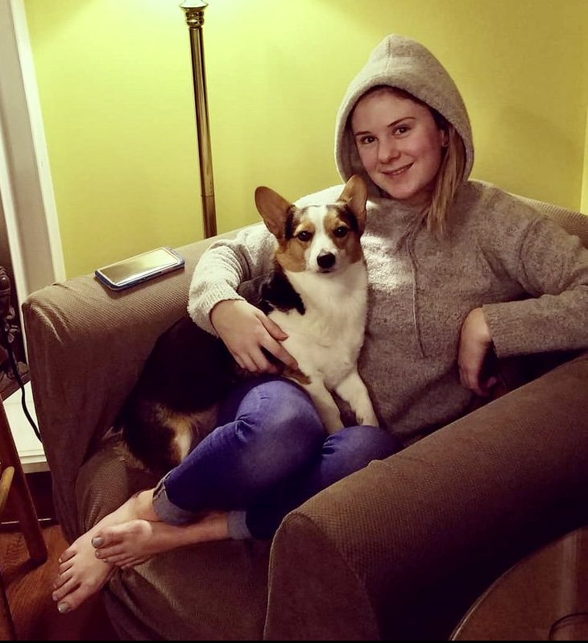

My name is Kendrah Davis. I am 26 years old and still living where I was born, NC. I am currently a food and beverage server at a local restaurant here in Greensboro. I have worked in restaurants, call centers, car dealerships, you name it. Some things I enjoy in my free time are hanging with my corgi Yona, going thrifting, listening to music, and seeing my friends. I don't have any experience in the technical field yet. Once I graduated high school, I went to community college for a couple of years. I took some time off after that, then went back for another year. Since then, I have decided to persue software development with the help of Code Fellow's online coding bootcamp. I hope to find a steady job in the field that I enjoy that also makes a positive difference in the world.
Work Experience:
- Server
- Salesperson
- Call center agent
- Cashier
- Service lane associate

Top 10 Favorite Bands:
- The Clash
- The Cramps
- Thin Lizzy
- The Damned
- The Ramones
- Black Sabbath
- Together Pangea
- Witch
- Natural Child
- The Black Lips
Top 10 Favorite Bands:
- The Clash
- The Cramps
- Thin Lizzy
- The Damned
- The Ramones
- Black Sabbath
- Together Pangea
- Witch
- Natural Child
- The Black Lips